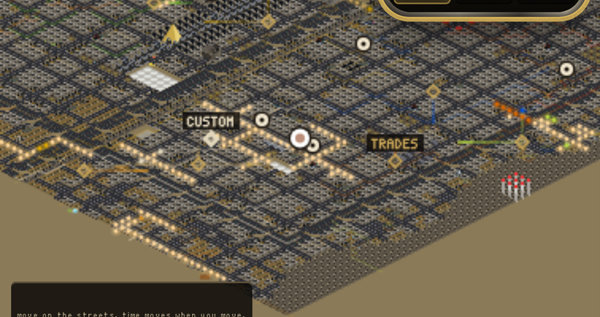
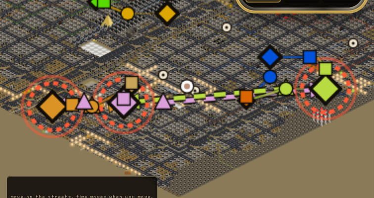
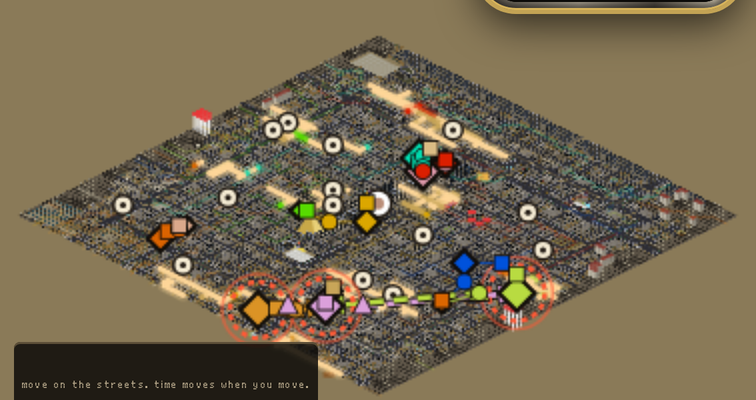

THE MAP AS IT IS, REAL FRAME

Zoomed on the three bases in the south-east. They are thin gold outlines. You cannot see
who is going where, or that anyone is going at all.
SAME MAP, SAME CAMERA, DRAWN FROM THE LIST

Every crew shows the line it is walking along, the way Battle Brothers shows a party's
banner and its destination line. The crews going to take something get a thick dashed line and an arrow.
A base a crew is heading at gets a red ring: a warning on the map.
THIN LINE = where a crew is walkingTHICK DASHED + ARROW = going to take something
RED RING = a crew is heading at this baseCIRCLE = caravanSQUARE = patrolTRIANGLE = a crew going to take something
THE WHOLE VALLEY THE SAME WAY

All 28 paths. The south-east and the north pile are busy. The rest is quiet.
WHAT I DID NOT BUILD, AND MY DEFAULT. When a crew gets there, nothing happens. I did not let crews
take bases on their own. My default is that a base only falls from what YOU do, until you say otherwise,
because a valley that rewrites itself while you look away is a big change. The warning is also how a
siege would start: a warning on the map, then an offer, then one fight.
Thumbs up keeps it that way. Thumbs down means let crews take each other's bases when nobody is watching.
WHERE THIS LIVES. The map's markers are RUN's job this round; this list is what they can draw from,
so these rings and lines are NOT IN A TAB YET on the live map. The picture above is the game's real map
with the list drawn on top of it.